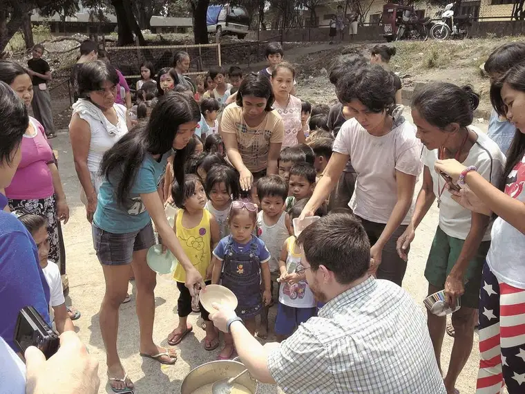

[For the sake of having a repository for my newspaper columns and articles, and allowing a second chance for those who missed them the first time, I reprint them here, with permission. The following ran in The Forum newspaper on Jan. 10, 2015.]

Faith Conversations: Feed My Starving Children returns to Fargo
By Roxane B. Salonen
FARGO – The biblical directive to feed the hungry became agonizingly personal to Bonnie Lund after a boy she’d sponsored in Africa died before any food aid had reached him.
Lund’s niece, Caitlin Gunderson, 19, was working as a missionary in Uganda last summer, and connected her with a child, Daniel, 13, who was in dire need.
“He looked like a much younger child due to malnutrition, maybe closer to 8, and he also suffered from AIDS,” Lund explains. “Sadly, Daniel passed away July 19, and although we had not even had time to set up the sponsorship, he already had a small piece of my heart.”
Lund says Daniel’s death turned what had been an ever-growing yearning to put her faith into action into bringing the Twin-Cities-based Feed My Starving Children initiative back to Fargo.
“I want to prevent this from happening to other children,” Lund says, “and I’m dedicating my efforts in Daniel’s memory.”
Though not the first time the program has come to the area, it’s always a daunting challenge. Each FMSC effort requires a minimum of 500 volunteers to pack 100,000 meals in the course of a day. In addition, funding is needed for the meals.
At 22 cents a meal, that equates to $22,000. The goal of the local initiative will be 200,000 meals and $44,000.
Lund, who attends Metropolitan Baptist Church, discovered that Atonement Lutheran Church of Fargo also wanted to work with the FMSC program, and ultimately connected with Ron Stensgard of that congregation, who is now leading the effort.
Both Lund and Stensgard have found the FMSC program to be exceptionally well run. “A high percentage of Feed My Starving Children’s funds go toward the food,” Lund says. “I’m very impressed with how sound they are and pleased to partner with such a great organization.”
Stensgard adds that he’s grateful the effort has grown beyond a one-church event to involve many local churches and individuals working in collaboration.
“I like to try to get churches together more. We don’t do a real good job of that at times,” he says. “I thought this would be another good way to help people abroad who really need help while bringing service opportunities to our churches and community.”
Truck full of love
Having worked with an FMSC project before, Lund has a clear sense of what will soon unfold.
The day before the event, a semitrailer will roll into Fargo containing bulk food including rice, dehydrated vegetables and nutrition supplements. From there, the food will be transported to the gym at Atonement Lutheran, where volunteers will sort and bundle up portions into what are called “MannaPacks.”
“Everyone will be wearing a hairnet and getting educated on what they’ll be doing prior to beginning their work at the stations,” Lund says.
The food will then be reloaded onto the truck and returned to the home site in the cities, then provided to partner organizations and distributed to those in need. The program’s food packets reach 70 different countries.
Stensgard says Mike and Tracey Burr of Action International Ministries, one of the organizations tied to FMSC, will be driving from Wisconsin to attend the Fargo-Moorhead drive. They’ll also be speaking at Atonement later that day about the program and their personal experience with helping fill the bellies of the hungry overseas.
AIM works in 25 countries, including the Philippines, where they operate 45 feeding sites in Manila and 25 in eastern Samar, Leyte, Cebu and Panay, along with another 10 in Bohol for quake victims and 17 in Albay, Nueva Ecijca and Cajayan De Oro – with nearly 12,000 people being fed at each feeding.
“The AIM group I’m working with works a lot with street kids,” says Stensgard, who recently traveled to Manila. “After six months, we try to get (the adults) to a position where they can return to society and hopefully find a job and lead a better life.”
Stensgard started his missionary work volunteering with Friends of Chimbote, a local organization begun by a former Fargo priest, the Rev. Jack Davis. In his decade or so of doing mission work, he’s seen a lot of hardship.
“There are 2 million people in Manila alone, and those who live in the streets really don’t have anything at all,” he says. “I’ve been at some of these feeding sites, and the people are really impoverished. Most are just looking for a helping hand.”
Natural disasters like typhoons haven’t helped. “There’s been a lot of destruction, with 80 to 90 percent of the coconut trees damaged recently, and that’s their livelihood,” he adds.
While feeding others is only the beginning, it’s an important start, Stensgard says. “Education is important, but you can’t teach a hungry mind. Father Jack used to say, if they’re hungry and they’re thinking about food, if you feed them, you can get their attention, and then they can learn.”
Stensgard says he’s fueled by helping others, but also, what he gets from it. “You won’t find out what true joy is until you serve along others and help others. We’ll never have enough material things, but when we serve, we can find more of an inner joy.”
He encourages groups like Confirmation classes and other church groups, including youth-oriented ones, to join in. “We don’t always do enough to teach our kids to serve, but what better way to do that than serving together?”
To Lund, the effort offers her a chance to walk the walk.
“Over and over we read in Scripture that the hungry, the poor, are so special to God,” she says. “He calls upon us as Christians to love, and I think this is one way I can show my love.”
 |
| Joe Rabideaux of Detroit Lakes, Minn., serves Feed My Starving Children food at a Manila feeding site during a recent missionary trip./Special to The Forum |
{kind=link}
If you go
What: Feed My Starving Children MobilePack event to package 200,000 meals in one day for malnourished children around the world
When: Jan. 24
Where: Atonement Lutheran Church, 4601 S. University Drive, Fargo
Info: Contributions may also be sent to: Feed My Starving Children, Fargo Area MobilePack #1501-247, Atonement Lutheran Church, 4601 S. University Drive, Fargo, ND 58104. For more information, call (701) 237-9651 or visit www.atonementfargo.org.
Online: Visit http://fundraising.fmsc.org/Fargo or search “Feed My Starving Children – Fargo Area MobilePack” on Facebook.